authors
- andsens
maintainers
- andsens
contributors
- mbobakov : 20 commits
- andsens : 19 commits
- bcoca : 7 commits
- mscherer : 3 commits
- foozmeat : 3 commits
- DazWorrall : 2 commits
- abadger : 1 commits
- Penguin2600 : 1 commits
total issue counts
feature pull request: 3
pullrequest: 9
docs pull request: 1
bugfix pull request: 4
issue: 1
new plugin: 1
bug report: 1
issue history
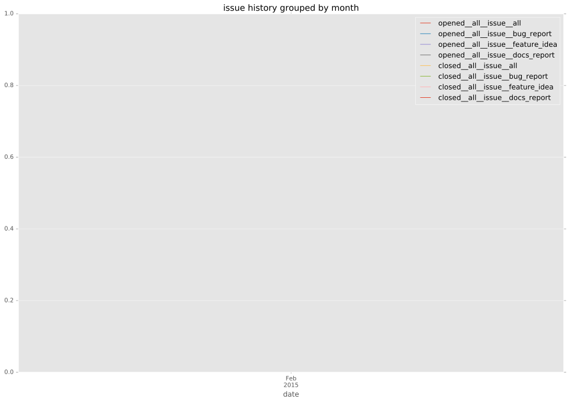
pullrequest history
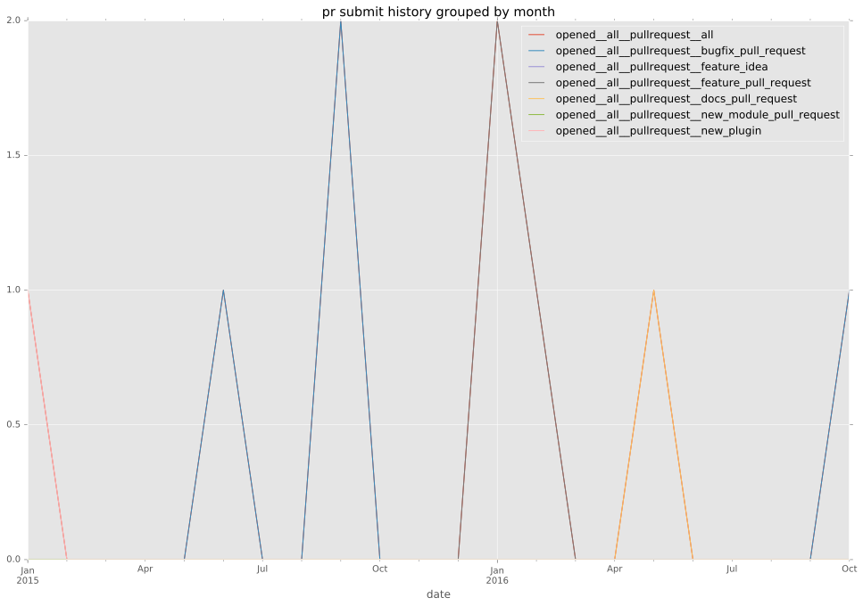
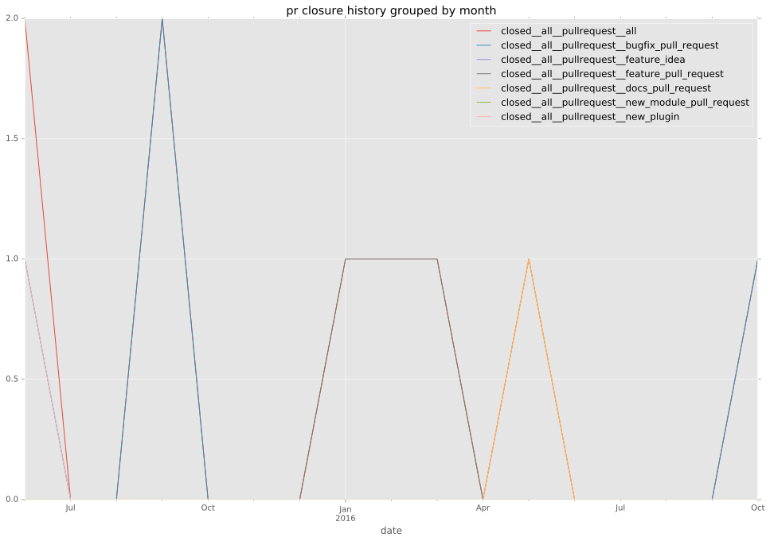
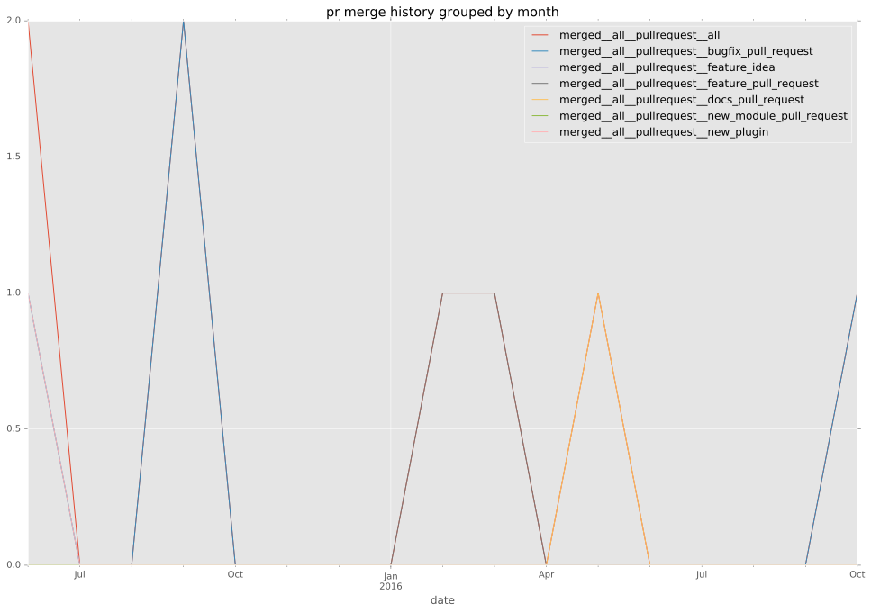
days open by issue type
bugfix pull request
count: 8
std: 0.462910049886
min: 0
max: 1
median: 0.0
mean: 0.25
all
count: 18
std: 109.155717158
min: 0
max: 439
median: 0.5
mean: 45.8333333333
pullrequest
count: 0
std: nan
min: nan
max: nan
median: nan
mean: nan
docs pull request
count: 2
std: 0.0
min: 0
max: 0
median: 0.0
mean: 0.0
feature pull request
count: 5
std: 13.2022725317
min: 0
max: 30
median: 11.0
mean: 16.4
issue
count: 0
std: nan
min: nan
max: nan
median: nan
mean: nan
new plugin
count: 2
std: 0.0
min: 151
max: 151
median: 151.0
mean: 151.0
bug report
count: 1
std: nan
min: 439
max: 439
median: 439.0
mean: 439.0
closures grouped by total days open
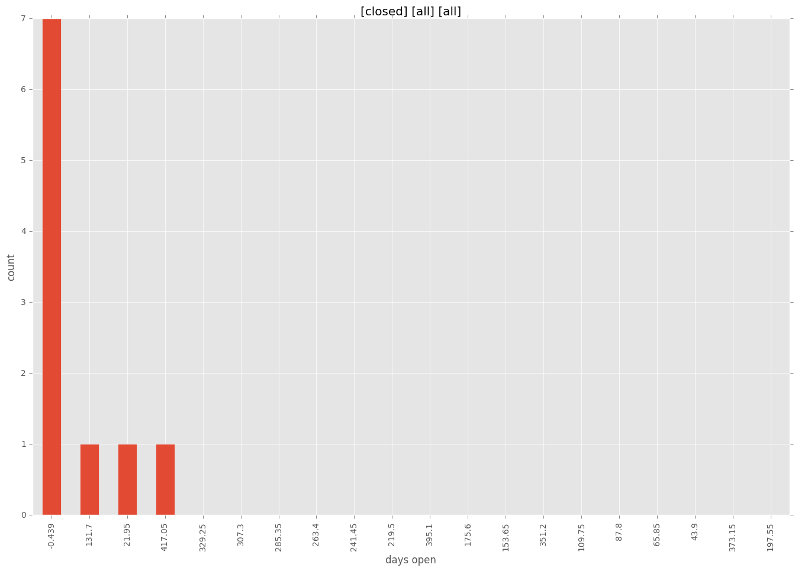
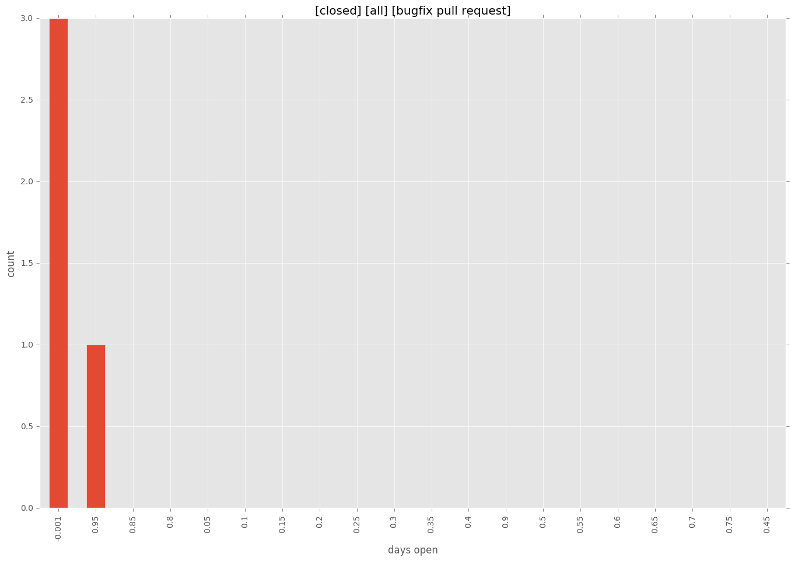
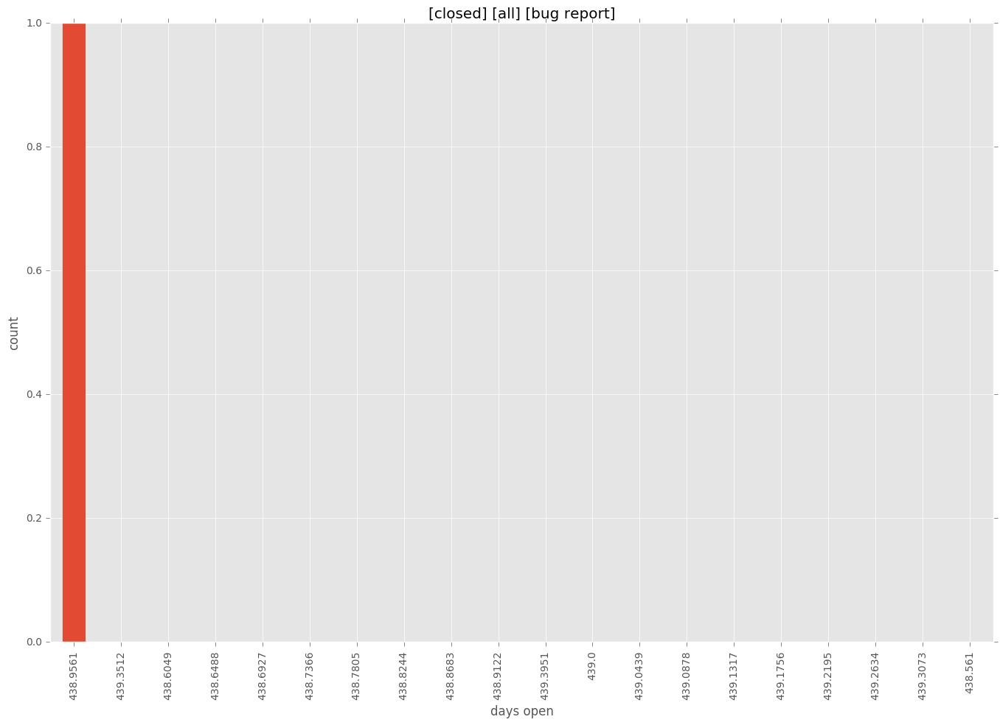

 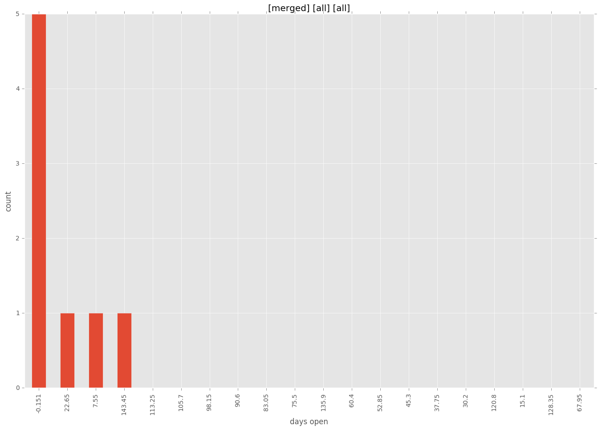
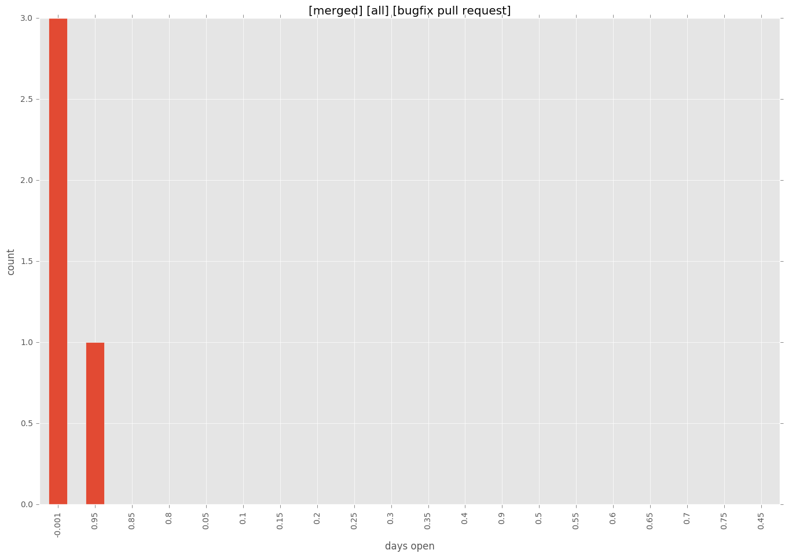
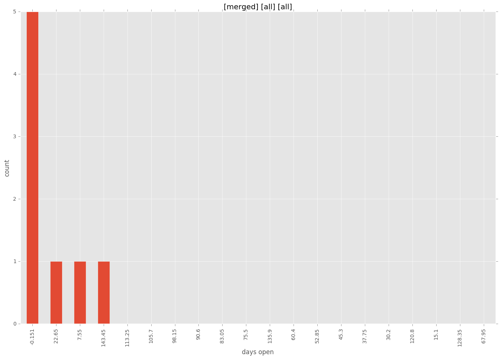
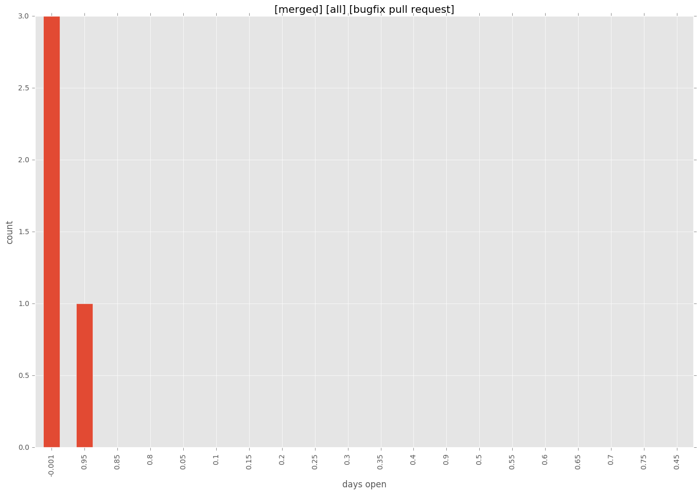